在 Windows 10 安裝 Visual Studio Code
開啟網頁 https://code.visualstudio.com/：
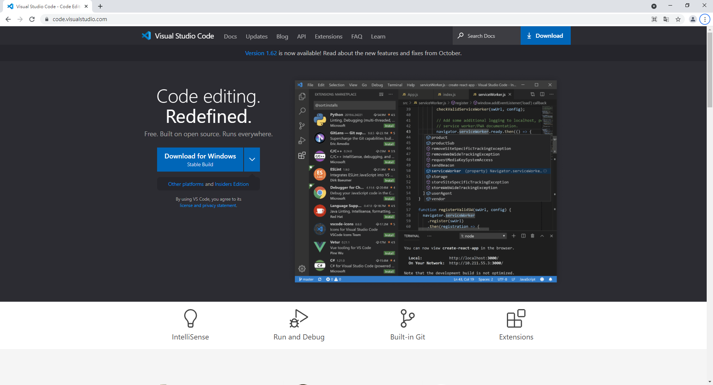
點擊 Download for Windows 下載安裝檔，下載完成後打開安裝檔：
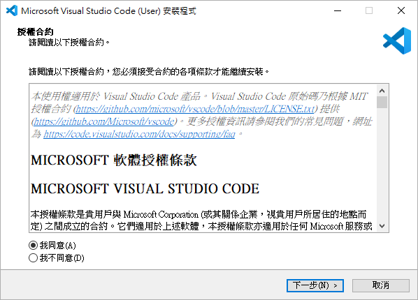
點擊我同意，再點擊下一步：
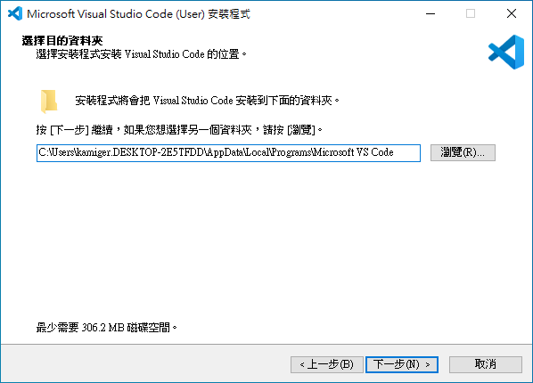
點擊下一步：
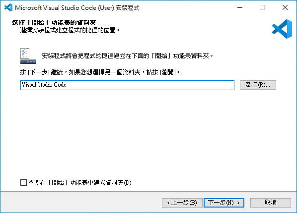
點擊下一步：
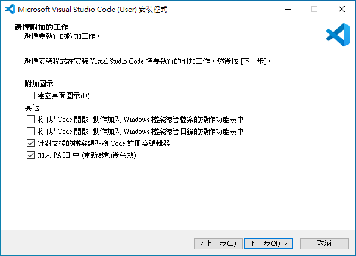
點擊下一步：
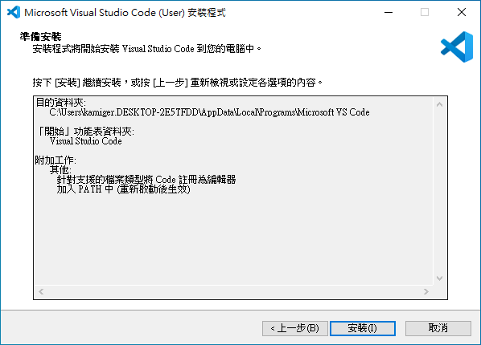
點擊安裝：
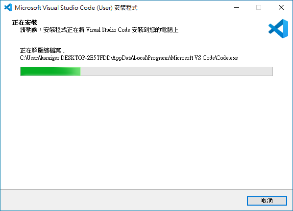
正在安裝，等待安裝完成。
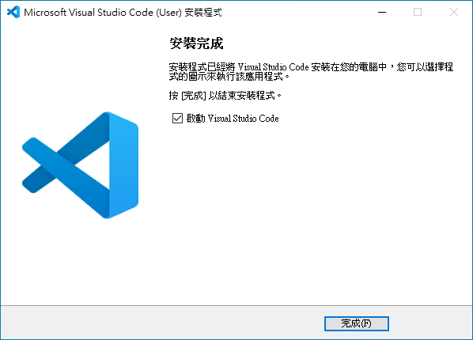
安裝完成，點擊完成：
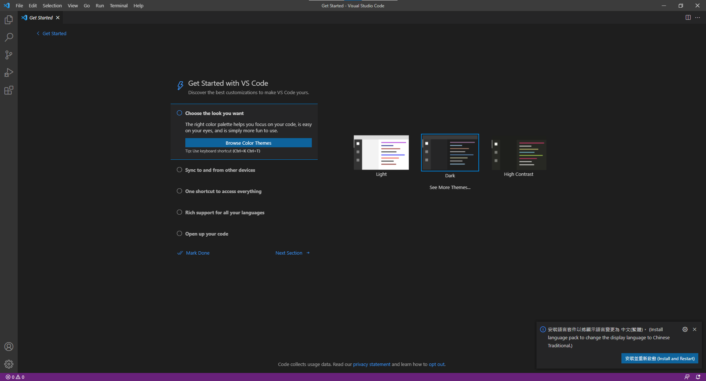
點擊右下角安裝並重新啟動 按鈕，安裝中文套件：
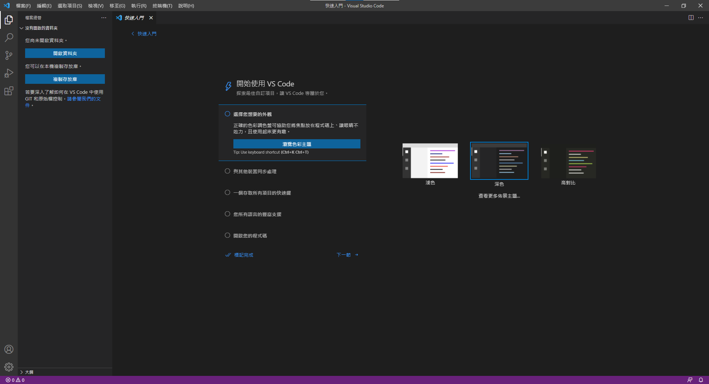
點擊標記完成略過初始設定，或者你想要隨著 Visual Studio Code 的引導進行初始設定。
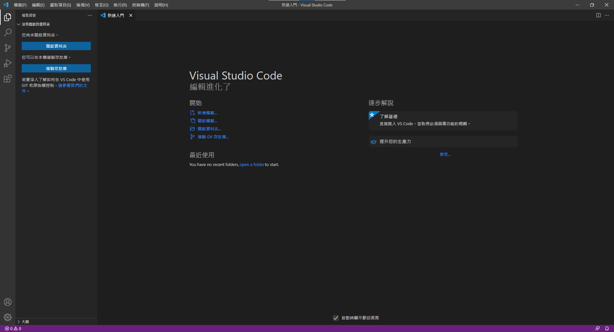
到此就完成安裝 Visual Studio Code，這是 Visual Studio Code 的啟動畫面。